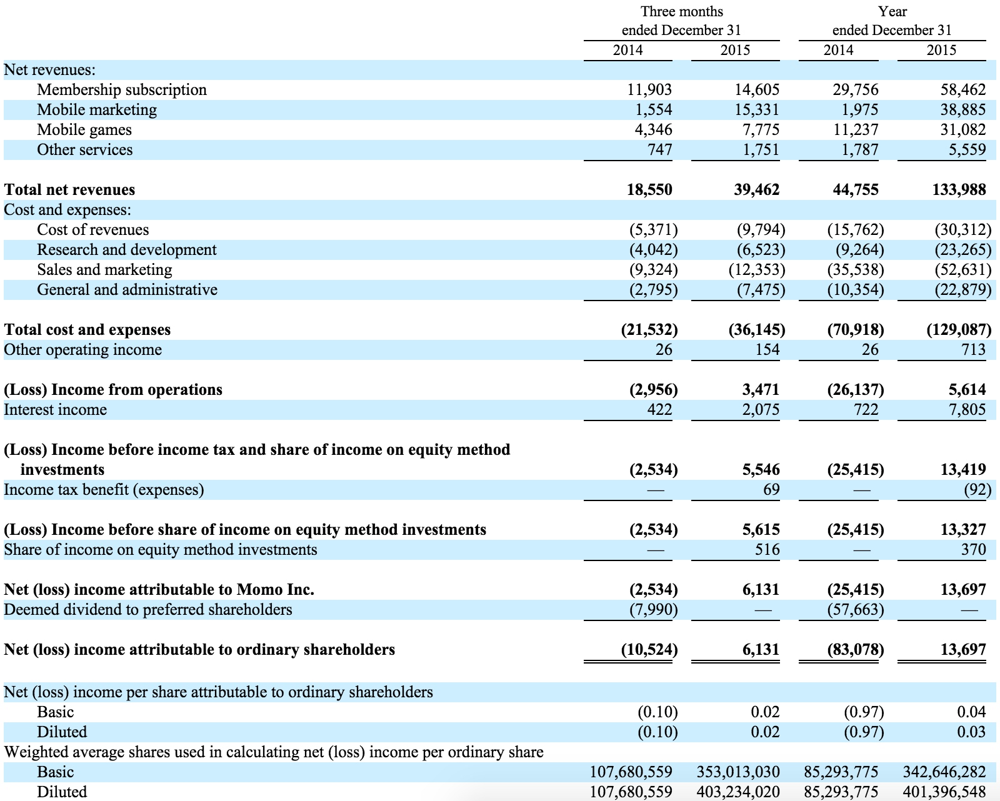
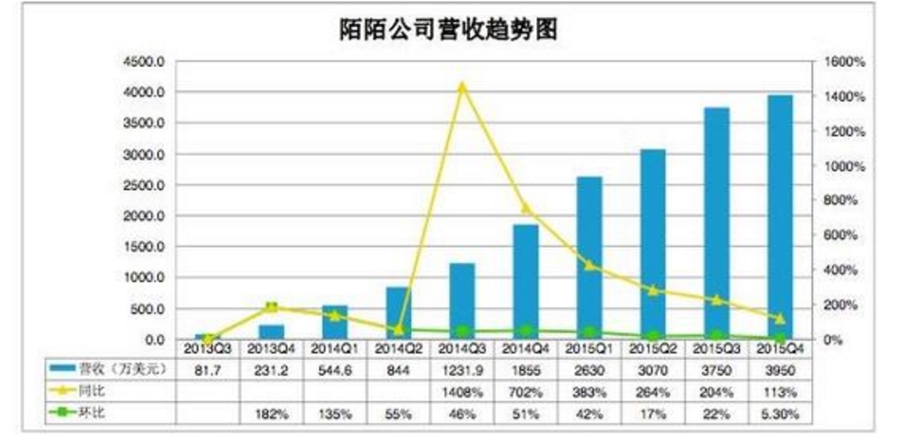
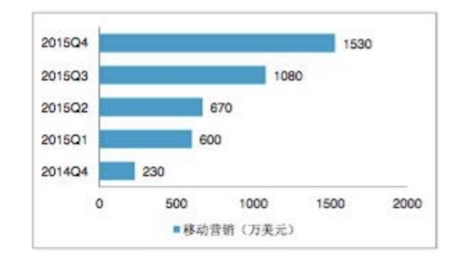
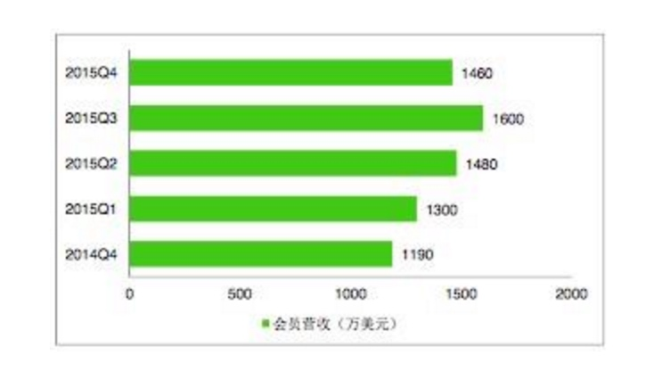
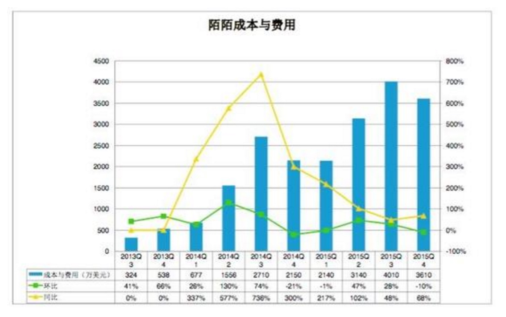
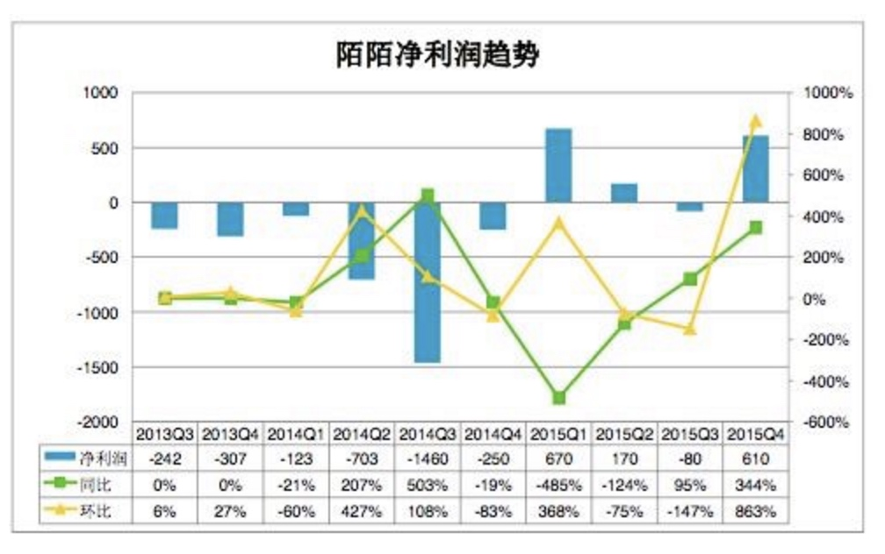
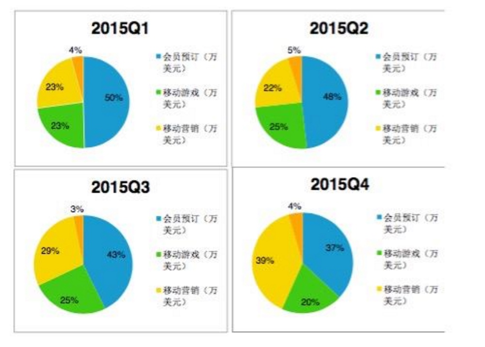

最新财报

以下为陌陌公司2015年第四季度财报要点图解：
一、营收持续增长，同比、环比增速放缓

陌陌营收成持续增长趋势，但增速逐渐放缓，第四季度总营收3950万美元，相比第三季度3750万美元，环比增长5.3%，相比去年第四季度1855万美元，同比增长113%。
二、移动营销已成第一大收入来源

陌陌2015年第四季度财报最大看点在于主要营收方式的结构性变化。移动营销已超过会员订阅服务成为这家移动社交平台的第一大营收方式。
2015年第四季度，陌陌移动营销收入1530万美元，占比39%，会员订阅收入1460万美元，占比37%。从增长趋势上看，之前的第一大收入来源——会员订阅占比不断下降，会员费收入也首次出现下滑，环比下降8.8%。

实际上，在2016年年初召开的陌陌首届全国商业合作伙伴峰会上，公司董事长唐岩还专门强调了陌陌在商业化方面的探索，并表示陌陌将在未来转型成为移动营销平台。唐岩还称，这是移动社交平台商业化发展的趋势，也是借鉴了Facebook商业化转型后的决策。
三、成本支出主要用于直播业务

成本支出方面，陌陌在2015年第四季比上一季度环比降低10%，控制在3610万美元，但从图表也可看出，这一季度成本支出仅次于上一季度。陌陌公司董事长唐岩对此问题的解读是：人才、网络流量和歌手分成支出。
值得一提的是，陌陌从2015年第三季度开始，上线了音乐直播平台“陌陌现场”，并邀请到国内知名音乐制作人梁翘柏作为首席内容官，在网络流量和歌手分成上的支出，将是未来很长一段时间内陌陌的主要成本支出。
此外，对于陌陌在第三季度出现的成本支出较大情况，陌陌内部的解读为：夏季会有意识加强广告营销支出。
四、盈利能力在增加，但受季节性营销影响

季节性广告营销的策略也在一定程度上影响到陌陌的净利润情况。从陌陌净利润趋势来看，这家移动社交平台的盈利能力在不断增加，但也受季节性营销策略的影响，在支出较大的第三季度，陌陌尚未实现盈利。
最后，从此次陌陌公布的6980万月活用户数来看，这家主打陌生人社交的公司月活数据较为稳定，2014年第四季度，陌陌财报披露的月活数量为6930万。
唐岩也在此次财报解读中表示，陌陌目前的头等要务仍是扩大用户规模。

此外，陌陌此次也公布了2015年全年财报，显示陌陌2015年全年经营活动带来的净现金为5730万美元。由于陌陌已在2015年6月宣布将要私有化，现金和强有力财团的支持将成为最关键变量。可参照的是，奇虎360为私有化，甚至抵押公司大楼等以换得34亿美元贷款支持，而陌陌在私有化方面尚无实质性进展，公司高管层面也拒绝对此话题发表评论。（李根）
雪球人的评论
陌陌的商业模式显然是免费加增值，陌陌会员其实就是一种增值服务，它在普通会员的功能上进行了升级，但不买会员选择做个普通会员也完全不会影响使用。不得不说，陌陌的产品对人性的理解是深刻的。会员提供的核心功能其实就两个，多样化的展示方式与空间，一项较为重要数据的获取权限，其实就是“展示逼格+谁看过你”，这两点可以大大提高交友成功的可能性。这就是会员的价值所在吧。
但问题其实不是陌陌会员这项增值服务为购买者提供了多大价值，而是对于陌陌而言，仅开放了几项功能，就有那么多用户心甘情愿地为它付费。这点对于绝大多数社交软件而言，一定是满满的羡慕嫉妒恨。
社交产品的商业模式，本质上是在一定主题内，通过提供功能，满足需求，营造场景，吸引到与产品气质相符的一批用户，然后想办法将用户货币化。一款真正值钱的社交产品，一定要在“吸引用户”+“货币化”这两部分都得到高分。
不管三七二十一，先积累用户，再图货币化。这是大多数社交产品的发展路径。但货币化并非自然而然，水到渠成。聚集大量用户，却很难从他们身上赚到钱的社交产品不要太多。所有的社交产品都希望直接从用户身上赚到钱，希望他们在这里消费、下单、交易。花钱的用户和当做流量被导出的用户价值天差地别，对产品的估值会有很大的影响。
但其实货币化阶段是否顺利，可能在吸引用户这个阶段就已经定了。产品的主题，社区的气质，使用的场景，都潜在地影响着用户的消费倾向。
我坚定看好陌陌的最主要原因，就是它在“用户吸引”+“货币化”这两项上都是高分。陌生人交友对于寂寞男女来说需求强劲，且陌陌已经站稳这个市场，没老二老三什么机会了，即便短期月活有反复，也不影响长期对用户的吸引力。（况且3季报的月活下降和公司运营目标有关，4季报用户活跃度，在线时长很大概率会反转）
当然，陌陌也有天然缺陷，这是注定的。寂寞男女的数量有限，它的用户天花板远远低于微信甚至微博。但其实这部分用户绝对数量也不小，且在陌陌营造的场景下乐意花钱，足够撑起一款值钱的社交产品。